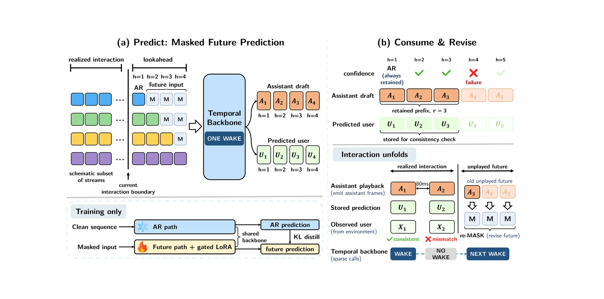
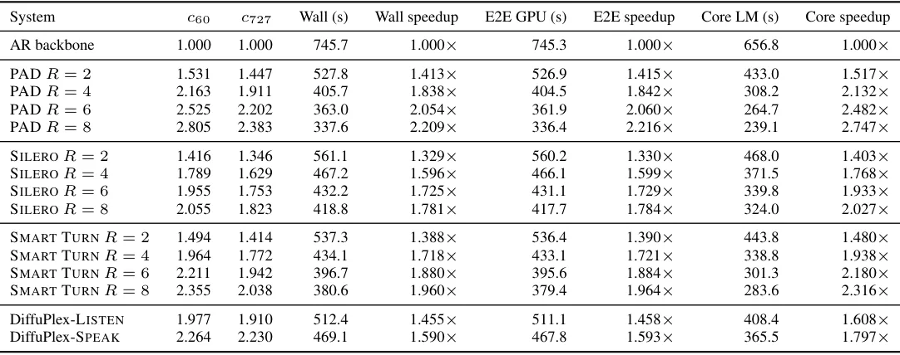
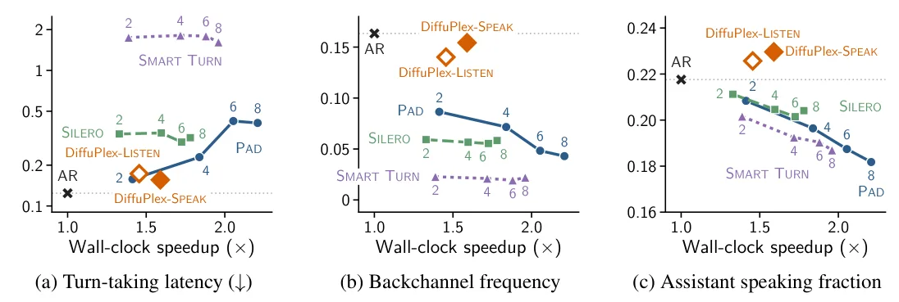

O problema da computação frame a frame
Modelos de diálogo falado evoluíram de pipelines em cascata (reconhecimento de fala → processamento de texto → síntese de voz) para sistemas end-to-end que processam e geram fala diretamente. A maioria ainda opera em modo half-duplex: usuário e modelo se alternam, e a resposta só começa depois que o sistema detecta que o usuário parou de falar. Mas conversas humanas reais incluem interrupções, sobreposições e backchannels — aqueles 'uh-hum' e 'certo' que mostramos enquanto o outro fala.
Isso motivou modelos full-duplex como Moshi e PersonaPlex, que escutam continuamente enquanto geram fala, permitindo que ambos os lados falem ao mesmo tempo. O PersonaPlex, por exemplo, mantém canais paralelos para usuário e assistente e atualiza ambos a cada frame de interação de 80ms. Essa granularidade fina permite reações rápidas a interrupções e sobreposições, mas tem um custo: exige uma passagem completa pelo backbone temporal a cada 80ms durante toda a conversa.
O problema é que interação em granularidade fina não necessariamente exige computação fresca a cada frame. Analisando 38 horas de conversas telefônicas do corpus Switchboard, os autores descobriram que 95,3% do tempo conversacional ativo contém apenas um participante falando. Mesmo durante a fala, o conteúdo futuro é planejado além de frames individuais: preparação de resposta pode começar antes do interlocutor terminar, e o planejamento da fala se estende além de palavras isoladas.
Essas observações sugerem que vários frames futuros de interação podem ser preditos juntos. Em geração de texto, essa redundância já é explorada através de speculative decoding e modelos de difusão. Mas estender predição paralela para fala full-duplex é desafiador: a fala futura do usuário, necessária para verificar o rascunho do assistente, ainda não chegou.

A ideia central: predição mascarada do futuro com revisão sob demanda
O DiffuPlex substitui o rollout autorregressivo frame a frame por predição mascarada de um bloco futuro curto. A cada passagem pelo backbone temporal — que os autores chamam de backbone wake — o sistema prediz um bloco de frames futuros tanto do usuário quanto do assistente, substituindo entradas futuras indisponíveis por tokens MASK aprendidos.
O sistema então retém um prefixo contíguo confiável do rascunho do assistente e o reproduz na taxa de interação original enquanto a fala do usuário continua chegando. As predições do usuário são armazenadas para verificação de consistência. Se a entrada observada do usuário diverge da predição, o DiffuPlex mantém todos os frames do assistente que já foram reproduzidos e revisa apenas o futuro não reproduzido.
Essa abordagem é inspirada em speculative decoding, mas adaptada para o contexto único de fala full-duplex. Em vez de verificar tokens de texto contra um modelo maior, o DiffuPlex verifica predições de fala do usuário contra a entrada real que chega. A diferença crucial é que a verificação acontece de forma contínua e assíncrona, conforme a fala do usuário é capturada.
Os autores consideram duas políticas de inferência sobre o mesmo preditor. O DiffuPlex-LISTEN consome múltiplos frames futuros quando eles predizem silêncio do assistente, com um comprimento mínimo retido de 6 frames. Já o DiffuPlex-SPEAK também pode consumir fala predita do assistente, usando um mínimo de apenas 2 frames. Ambas as políticas garantem que a predição em h=1 é sempre retida, assegurando que cada wake avance a interação por pelo menos um frame de 80ms.

Como funciona: mascaramento, confiança e revisão
O DiffuPlex parte do personaplex-rl-seamless, uma variante pós-treinada com reinforcement learning do PersonaPlex. Os autores congelam o backbone original e treinam apenas os embeddings MASK específicos por stream e parâmetros LoRA com gating futuro no dataset Seamless Interaction, que contém interações diádicas face a face em larga escala.
A predição mascarada funciona assim: a cada wake, o modelo recebe o histórico real até o presente e tokens MASK para posições futuras. Ele então prediz simultaneamente os próximos W frames (até 16 no setup padrão) para ambos os streams — usuário e assistente. Para o assistente, isso gera um rascunho de fala; para o usuário, gera predições que serão verificadas contra a entrada real.
A retenção baseada em confiança determina quantos frames do rascunho do assistente serão consumidos. O sistema calcula scores de confiança para cada posição predita e retém um prefixo contíguo onde todos os frames excedem um threshold τconf = 0.80. Isso significa que o modelo só se compromete com predições nas quais tem alta confiança, evitando erros em cascata.
A revisão acontece quando a fala real do usuário diverge das predições armazenadas. O sistema compara continuamente a entrada observada com as predições do usuário e, quando a divergência excede um threshold τrev = -0.5, descarta apenas o futuro não reproduzido do assistente e gera novo conteúdo condicionado na entrada real. Frames do assistente já reproduzidos são preservados — não há como 'desfalar' o que já foi dito.
Essa combinação de predição paralela, consumo seletivo e revisão cirúrgica permite que o DiffuPlex avance múltiplos frames por wake enquanto mantém a capacidade de reagir rapidamente quando a conversa toma rumos inesperados.
Resultados: aceleração substancial com comportamento preservado
Os autores avaliaram o DiffuPlex em quatro dimensões: interação full-duplex, capacidade geral de linguagem falada, avaliação humana e eficiência de inferência. Para interação full-duplex, usaram o Full-Duplex-Bench v1.0, que testa tratamento de pausas, backchanneling, turn-taking e interrupções do usuário, além do v1.5 para fala sobreposta e interferente.
Os números de eficiência são impressionantes. O DiffuPlex-LISTEN alcança speedup de 1.46× no wall-clock de deployment e 1.61× no Core LM (o tempo de processamento do modelo de linguagem principal). O DiffuPlex-SPEAK é ainda mais rápido: 1.59× no wall-clock e 1.80× no Core LM. Importante: todas as invocações do backbone completaram dentro do intervalo de interação de 80ms, garantindo operação em tempo real.
Na avaliação de interação full-duplex, o DiffuPlex-LISTEN preserva o comportamento do modelo base quase perfeitamente. Nas métricas de pausa (Synthetic e Candor), turn-over rate, frequência de backchannel e timing, os números são comparáveis ao personaplex-rl-seamless. O score de apropriação de resposta a interrupções (Judge) é 4.328 para ambos, indicando que a qualidade das respostas não degrada.
O DiffuPlex-SPEAK mostra trade-offs interessantes. Ele é mais rápido, mas introduz algumas degradações. A latência de resposta a interrupções aumenta ligeiramente de 0.281s para 0.347s, e há pequenas mudanças nas métricas de turn-taking. Isso faz sentido: consumir fala predita do assistente é mais arriscado que consumir apenas silêncio predito.

Avaliação humana: naturalidade versus velocidade
A avaliação humana, conduzida via Amazon Mechanical Turk, mediu dois aspectos: naturalidade da fala (NMOS) e qualidade do diálogo (DMOS). Participantes ouviram respostas do assistente após interrupções do usuário e avaliaram a conversa completa.
O personaplex-rl-seamless base obteve NMOS de 3.93 ± 0.12 e DMOS de 4.09 ± 0.14. O DiffuPlex-LISTEN praticamente mantém esses números: 3.92 ± 0.11 para NMOS e 4.08 ± 0.13 para DMOS. As diferenças estão dentro da margem de erro, indicando que a política conservadora de consumir apenas silêncio predito preserva tanto a naturalidade da fala quanto a qualidade conversacional.
O DiffuPlex-SPEAK apresenta um trade-off mais visível. O DMOS se mantém em 4.07 ± 0.13, mostrando que a qualidade conversacional é preservada. Mas o NMOS cai para 3.54 ± 0.12, uma degradação estatisticamente significativa na naturalidade da fala. Isso sugere que consumir fala predita do assistente introduz artefatos perceptíveis, mesmo quando a estrutura conversacional permanece intacta.
Vale notar que o baseline Moshi, apesar de ser um modelo full-duplex pioneiro, obteve NMOS de 3.52 ± 0.15 e DMOS de 2.86 ± 0.20 — números substancialmente menores que todos os modelos baseados em PersonaPlex. Isso ilustra o progresso recente em modelos de diálogo falado.

Comparação com baselines: pular frames não funciona
Para testar se ganhos computacionais similares poderiam ser obtidos simplesmente pulando algumas invocações do backbone autorregressivo, os autores implementaram baselines de execução diferida (deferred execution). Esses baselines avançam R frames de uma vez (R ∈ {2, 4, 6, 8}), mas forçam frames diferidos a silêncio.
Os resultados mostram que pular frames degrada significativamente o comportamento de interação. Mesmo com R=2 (avançando apenas 2 frames por vez), as métricas de pausa e turn-taking se deterioram. Com R=8, o modelo essencialmente perde a capacidade de reagir apropriadamente a interrupções e mudanças de turno.
O DiffuPlex, em contraste, mantém o comportamento de interação enquanto avança 1.91 ou 2.23 frames por wake. A diferença fundamental é que o DiffuPlex prediz ativamente o futuro e revisa quando necessário, em vez de simplesmente ignorar frames. Isso permite que ele mantenha a reatividade mesmo quando processa múltiplos frames simultaneamente.
Os autores também testaram baselines que usam detectores de atividade de voz (Silero) ou controladores de turno (Smart Turn) para decidir quando pular frames. Esses métodos melhoram sobre o deferred execution simples, mas ainda ficam atrás do DiffuPlex em termos de preservação do comportamento de interação.
Capacidade geral: mantendo o desempenho em tarefas de linguagem falada
Além de interação full-duplex, os autores avaliaram se o DiffuPlex preserva capacidades gerais de linguagem falada usando VoiceBench e OpenAudioBench. Essas avaliações testam compreensão de fala, seguimento de instruções e geração de respostas apropriadas em diversos contextos.
Os resultados mostram que tanto DiffuPlex-LISTEN quanto DiffuPlex-SPEAK mantêm desempenho comparável ao modelo base nessas tarefas. Isso é importante porque demonstra que a aceleração via predição mascarada não compromete a compreensão ou geração de linguagem do modelo.
Os autores reportam resultados tanto para o stream de texto do assistente (s→t) quanto para transcrições da fala gerada (s→s). Ambas as modalidades mostram preservação de capacidade, indicando que a qualidade da fala gerada não degrada de forma que afete a inteligibilidade ou correção do conteúdo.
Essa preservação de capacidade geral é crucial para aplicações práticas. Um modelo que acelera interação mas perde compreensão ou geração de linguagem teria utilidade limitada. O DiffuPlex demonstra que é possível obter ganhos computacionais substanciais sem sacrificar essas capacidades fundamentais.
Análises de ablação: confiança e revisão são complementares
Os autores conduziram análises de ablação para entender o papel de cada componente. Remover a retenção baseada em confiança (sempre consumindo o máximo de frames preditos) aumenta a velocidade mas degrada substancialmente a qualidade de interação. Isso confirma que consumir predições de baixa confiança leva a erros que se propagam.
Remover a revisão baseada no usuário (nunca revisando predições quando a entrada real diverge) também degrada o desempenho, especialmente em cenários com interrupções e mudanças inesperadas de direção conversacional. Isso mostra que a capacidade de revisar é essencial para manter reatividade.
A análise de diferentes thresholds de confiança (τconf) e revisão (τrev) revela trade-offs esperados. Thresholds de confiança mais altos resultam em consumo mais conservador e maior preservação de qualidade, mas menor aceleração. Thresholds mais baixos aumentam a velocidade mas introduzem mais erros.
Os autores também identificam que a degradação em fala predita mais profunda no futuro é parcialmente causada pela falta de condicionamento em tokens de áudio autorregressivos. O modelo prediz múltiplos frames simultaneamente sem o benefício de ter gerado e condicionado nos frames intermediários, o que pode levar a artefatos em predições mais distantes.
Limitações e trabalho futuro
O paper é honesto sobre limitações. A degradação de naturalidade no DiffuPlex-SPEAK mostra que consumir fala predita do assistente é mais arriscado que consumir apenas silêncio. Os autores sugerem que melhorar o condicionamento autorregressivo em predições futuras poderia mitigar isso.
Os experimentos foram conduzidos em um único GPU NVIDIA RTX A6000, e os speedups reportados são específicos a esse hardware. Speedups em outros hardwares (especialmente GPUs mais recentes ou hardware especializado) podem diferir. Os autores medem tempo de streaming wall-clock, tempo GPU end-to-end e tempo Core LM separadamente para fornecer uma visão mais completa.
O DiffuPlex foi avaliado usando um prompt de voz oficial fornecido com o backbone, sem construir novas identidades de falante ou tentar imitar indivíduos específicos. Como com outros modelos generativos de fala, há potencial para uso indevido em geração de fala sintética enganosa, e o uso deve seguir salvaguardas apropriadas.
O trabalho também não explora profundamente como o DiffuPlex se comporta em conversas muito longas ou em domínios muito diferentes do dataset de treinamento (Seamless Interaction). Generalização para outros idiomas além dos incluídos no Seamless também não é extensivamente testada.
Finalmente, os autores congelam o backbone e treinam apenas embeddings MASK e parâmetros LoRA. Uma abordagem de fine-tuning completo poderia potencialmente melhorar a qualidade das predições mascaradas, mas aumentaria significativamente o custo de treinamento.
O que isso significa para diálogo falado em tempo real
O DiffuPlex demonstra que predição paralela de múltiplos frames futuros pode fornecer um caminho para geração full-duplex em tempo real mais eficiente computacionalmente. Isso é importante porque modelos de diálogo falado estão se tornando mais sofisticados e computacionalmente caros, e a necessidade de processar cada frame de 80ms separadamente cria um gargalo significativo.
A abordagem é particularmente promissora porque explora a estrutura temporal natural da conversação. Humanos não planejam fala frame a frame — planejamos em unidades maiores e ajustamos conforme necessário. O DiffuPlex captura essa intuição através de predição de blocos futuros com revisão sob demanda.
Os resultados mostram que há um espaço de design entre o DiffuPlex-LISTEN (mais conservador, preserva naturalidade) e DiffuPlex-SPEAK (mais agressivo, maior aceleração). Aplicações diferentes podem escolher pontos diferentes nesse espectro dependendo de suas prioridades de latência versus qualidade.
O trabalho também sugere direções futuras. Melhorar o condicionamento autorregressivo em predições futuras, explorar janelas de lookahead adaptativas baseadas no contexto conversacional, e integrar predição mascarada com outras técnicas de aceleração (como quantização ou destilação) são caminhos naturais para investigação adicional.
O que fica
- DiffuPlex prediz múltiplos frames futuros de interação em uma única passagem, consumindo apenas o prefixo confiável e revisando quando a entrada real diverge, alcançando speedups de 1.59× a 1.80×.
- DiffuPlex-LISTEN preserva naturalidade da fala e qualidade conversacional enquanto DiffuPlex-SPEAK acelera mais mas degrada naturalidade, mostrando trade-offs claros entre velocidade e qualidade.
- Simplesmente pular frames degrada interação; a predição ativa do futuro com revisão é essencial para manter reatividade enquanto reduz computação sequencial.
- Todas as invocações do backbone completam dentro de 80ms, garantindo operação em tempo real, e a capacidade geral de linguagem falada é preservada em benchmarks padrão.
Paper original: DiffuPlex: Accelerating Full-Duplex Spoken Dialog Models via Rolling Masked Diffusion
Comentários
Nenhum comentário ainda. Seja o primeiro.